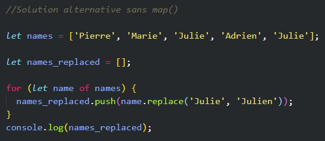
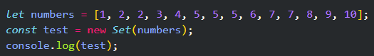

Suite du cours sur Javascript
Exercices 30 - 35
Exercices 30 - 35
Dans cette exercice, on doit créer une fonction qui retourne la somme des chiffres d'un nombre.
Par exemple, la somme des chiffres du nombre 123 est égale a 6 (1 + 2 + 3).
Dans le cas de cet exercice, on passe le nombre 31245 à la fonction. Elle doit donc retourner 15 (3 + 1 + 2 + 4 + 5)
La première chose à faire était de séparer chaque chiffre du nombré passé à la fonction.
Pour ça, on transforme le nombre en chaîne de caractères avec la méthode toString() puis en tableau en faisant un .split('') sur une chaîne de caractères vides. À ce
stade, la variable digitsAsList contient donc le tableau ['3', '1', '2', '4', '5']
On utilise ensuite la méthode map() qui permet de mapper une fonction à chaque éléments d'un tableau. Dans ce cas-ci, on utilise Number pour convertir chaque élément du
tableau en nombre.
Le tableau digits contient donc maintenant des nombres [3, 1, 2, 4, 5].
On peut maitenant boucler sur ce tableau grâce à une boucle for...of et additionner chaque nombre les uns avec les autres :
Puis on retourne la variable sum :
Une autre solution que j'ai trouvé aussi avec la méthode reduce() qui applique une fonction qui est un "accumulateur" et qui traite chaque valeur d'une liste (de gauche à droite)
afin de réduite a une seule valeur.
Dans cet exercice, il faut remplacer les occurences de Julie dans le tableau par Julien.
La liste names_replaced doit donc être égale à ['Pierre', 'Marie', 'Julien', 'Adrien', 'Julien']
Dans la solution proposéé, on utilise encore une fois la méthode map qui permet de mapper une fonction à tous les éléments d'un tableau.
On utilise pour ce faire une fonction fléchée :
Cette fonction est un raccourci pour cette fonction :
Cette fonction fléchée nous permet donc d'effectuer cette opération sur tous les éléments du tableau.
On utilise la méthode replace() pour ainsi remplacer 'Julie' par 'Julien' sur tous les éléments du tableau.
map()

On défini un tableau vide à "names_replaced". Ensuite avec la bouche for....of on .push() dans la variable "names_replaced" la méthode replace() qui va
nous permettre de remplacer chaque noms 'Julien' par 'Julien' .
Dans cet exercice, on doit enlever les doublons du tableau numbers et récupérer les nombres dans le tableau numbersWithoutDuplicates.
Le tableau numbersWithoutDuplicates devra donc être égale à [1, 2, 3, 4, 5, 6, 7, 8, 9, 10] :
On commence par créer un tableau vide que l'on va remplir avec les nombres uniques.
On boucle ensuite grâce à la boucle for...of sur la liste d'origine qui contient tous les nombres avec les doublons.
À l'intérieur de cette boucle, on utilise la méthode indexOf pour récupérer la position dans le tableau final du nombre sur lequel on est en train de boucler.
Lors de la première itération, number sera égal à 1.
La fonction indexOf nous retournera donc -1 car le nombre 1 n'est pas présent dans le tableau numbersWithoutDuplicates (pour l'instant il est
vide).
La condition numbersWithoutDuplicates.indexOf(number) === -1 sera donc validée et on ajoute ainsi le nombre dans la liste numbersWithoutDuplicates (avec la méthode
push()) :
Quand on tombe sur un nombre qui est déjà présent dans la liste numbersWithoutDuplicates, la méthode indexOf ne retournera pas -1,
mais l'indice du nombre déjà présent dans la liste. La condition ne sera donc pas validée et on n'ajoutera donc pas ce nombre une deuxième fois.
On obtient ainsi une liste qui ne contient aucun doublon.
J'ai pour ma part j'ai trouvé une autre solution avec la méthode Set :
Set est un objet qui a été introduit dans ES6. La nature de Set est telle qu'il permet de stocker obligatoirement et uniquement des valeurs uniques, singulières.
Lorsqu'on lui passe un tableau, Set supprimera toutes les valeurs en double.
Si on avait juste utilisé la méthode new Set(numbers), on aurait juste converti notre tableau en argument. Les doublons seraient bien enlevés mais ce ne serait plus un tableau.
Ensuite le spread operator ... permet de convertir le tout en tableau.
Et bien évident on .push() directement l'opération dans la variable numbersWithoutDuplicates.
... :

La const test = ... est bien entre accolade, c'est devenu un objet au lieu d'un tableau.
Dans cet exercice, on doit recréer la propriété length, disponible sur les chaînes de caractères, qui permet de récupérer la longueur d'une chaîne.
Par exemple :
'JavaScript'.length => 10
On doit ajouter au code la fonction length, pour qu'elle retourne la longueur de la chaîne de caractères JavaScript (dans ce cas-ci, la fonction doit donc retourner le
nombre 10.
Bien entendu, on ne doit pas utiliser la propriété length sur la chaîne de caractères. Il faut coder soit-même le comportement de la fonction sans cette propriété pour trouver la
longueur de la chaîne.
Pour résoudre cet exercice; on utilise une simple boucle for...of qui permet d'itérer sur l'élément passé à la fonction.
Il ne reste plus qu'à utiliser une variable qui agit en tant que compteur pour compter le nombre d'éléments dans l'itérable, sans passer par la propriété length.
La boucle for...of fonctionne sur tous les objets itérables, on peut donc lui passer une chaîne de caractères, un tableau ou encore un objet, et récupérer la longueur de tous ces
éléments.